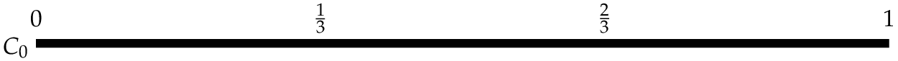

Cantor set animations
Cantor's set \(\mathcal C\) is constructing by repeatedly removing the middle third from each interval in the sequence \(C_n\) starting with \(C_0=[0,1]\)

The fractal nature of \(\mathcal C\) means that infinite detail is revealed as one zooms in to the set.